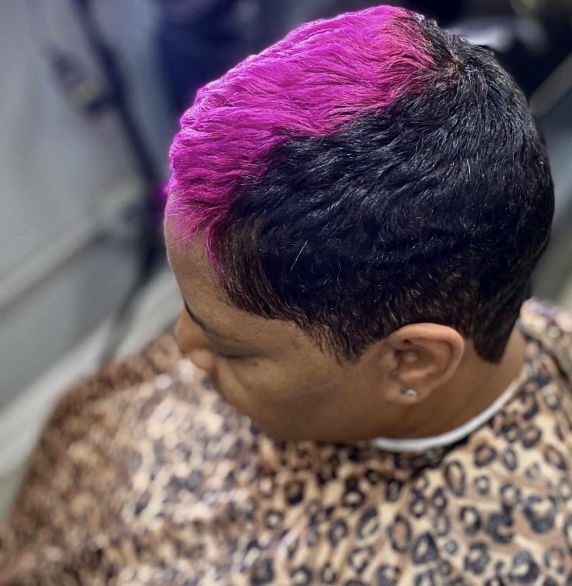

Signature Pixie Cut + Style
Precision shaping and detail work finished to complement your features.
Genetik Bleu Salon
Precision cuts, polished styling, healthy-hair care, and expressive color designed around the individual client.
Appointments are scheduled directly with the stylist. Services are not booked through this website. Please call during operating hours or message the stylist via the provided Instagram to schedule an appointment.